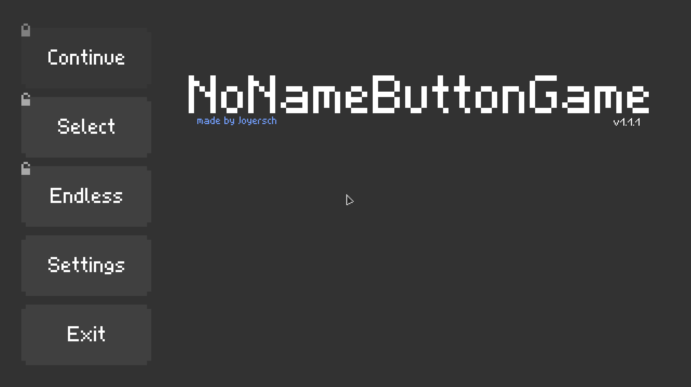
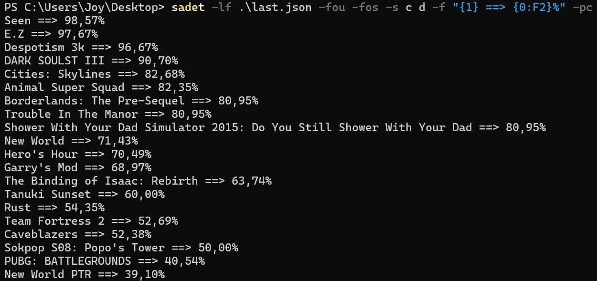
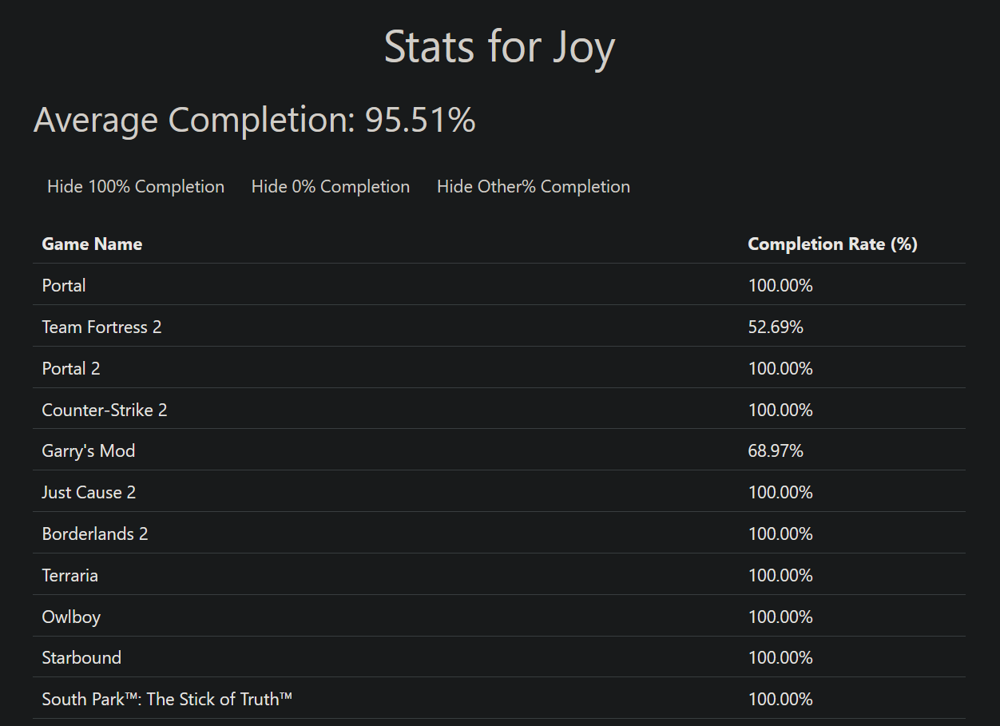
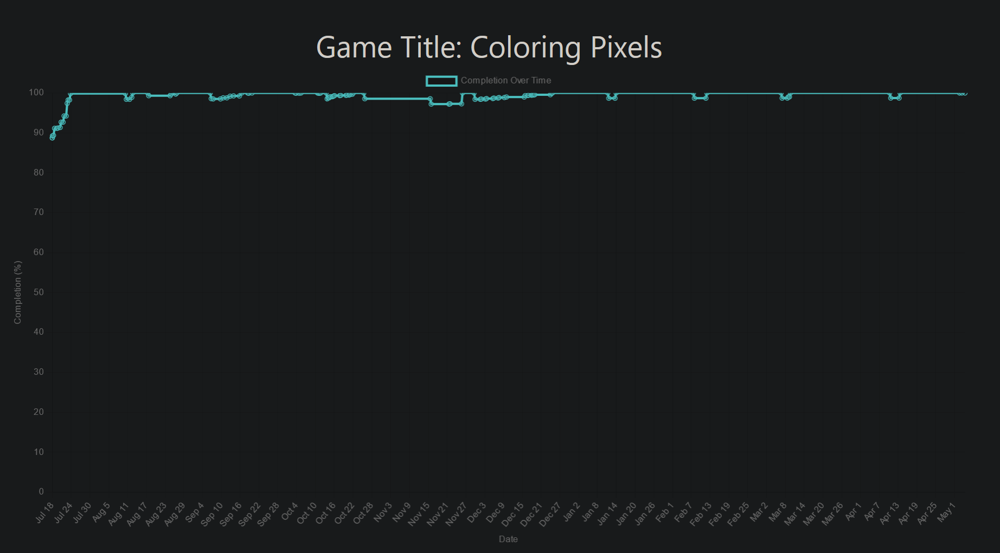
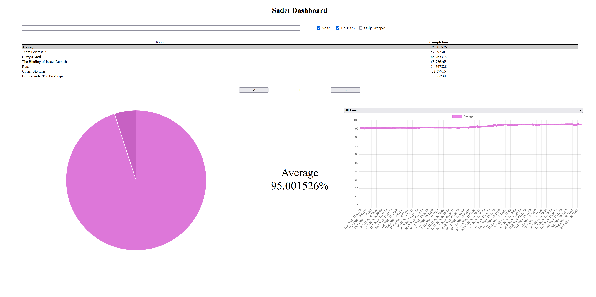

Simplicity is key!
NoNameButtonGame
A level based game around pressing a button or rather not being able to

GitHub
itch.io
sadet
A cli tool to do some simple data analysis on steam achievement or rather extract that data from steam.

GitHub
Docs
steam achievement dashboard
A simplistic dashboard for manage completing steam achievements.


GitHub
Live
sadet.autodb
[Has been depricated with the creation of steam achievement dashboard]
A collection of mutliple things. A script which automaticly pull steam achievement data. An api for that data and a dashboard to display that data on a web.

GitHub